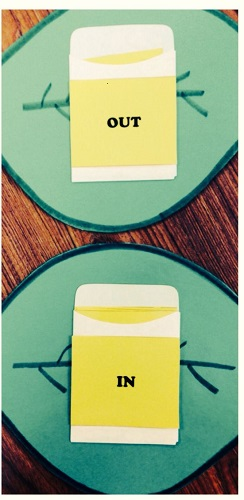
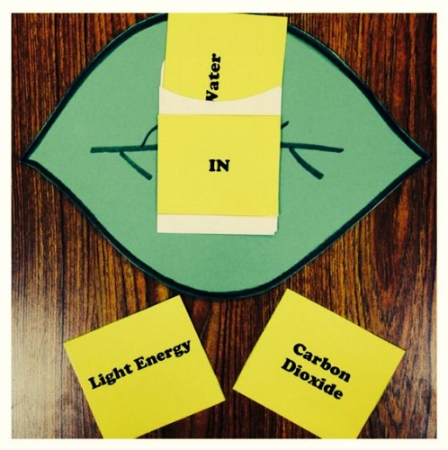
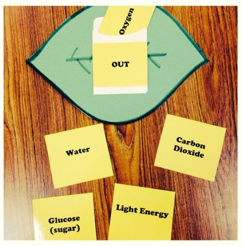

The leaf envelope will be our visual tool to indicate what parts go into the leaf and what comes out if the leaf during photosynthesis.
In this part, the player should choose which items the leaf takes in during photosynthesis. It should be water, sunlight, and carbon dioxide
In this last section, the player should determine what items the plant produces. It should be oxygen and sugar (aka glucose).
